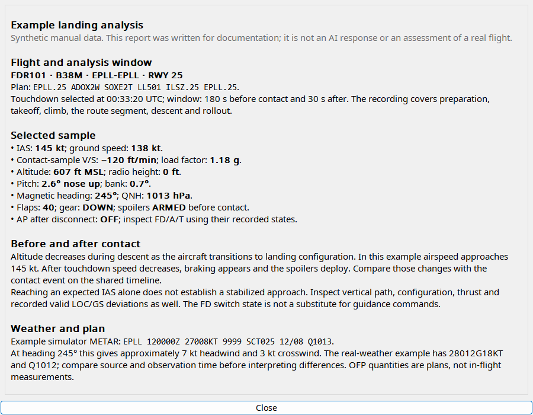
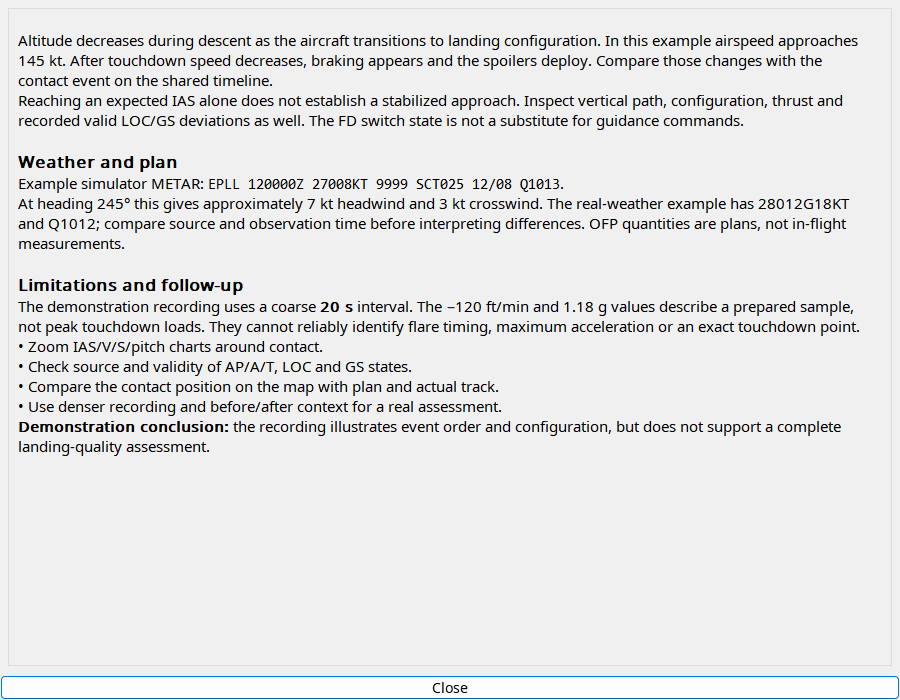

Select the intended takeoff/landing first, especially after touch-and-go. Inspect sample coverage, weather and plan before requesting analysis. The model is instructed to use the application language and distinguish plans from measurements. Reports are stored with the event; reopening does not request another response. Shift with the analysis action requests a new report. Verify conclusions on charts: a missing peak sample is not proof of a gentle contact.
Select an event, configure a provider and request analysis. Generated feedback is advisory for simulator use and can be wrong.
| Option / action | Behavior and limitations |
|---|---|
| Windows | Separate before/after context. Takeoff defaults 60/30 seconds; landing 180/30. Each setting allows 1–300 seconds and is limited by recording bounds. |
| Input | Available telemetry and relevant saved plan/FMC/weather. Plans stay distinct from measurements; missing parameters are not filled just to complete a report. |
| Language | The prompt requests the current application language while preserving aviation identifiers. A model may fail to follow instructions. |
| Provider | Codex CLI, Gemini or Ollama; authenticate/configure that service separately. Context and timeout can limit a request. |
| Report | Native formatted Markdown, retained with the event by the analysis flow. Opening a stored report does not require a new response. |
| Interpret | Check the timeline. Sampling can miss an impact peak; liftoff is not the start of rotation. Stable commanded IAS is not automatically VREF. |

